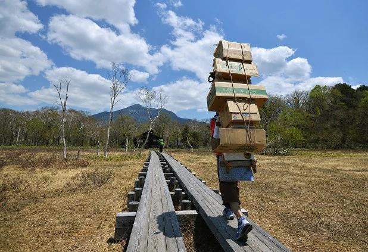
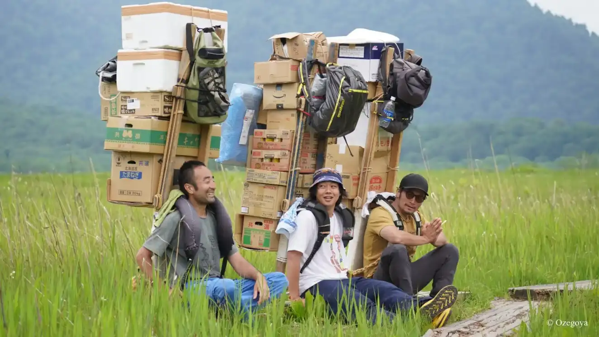
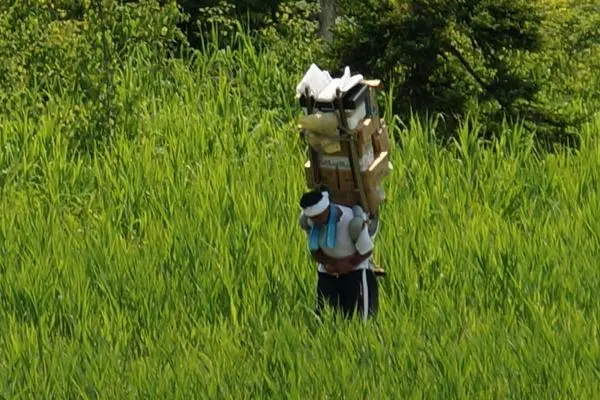
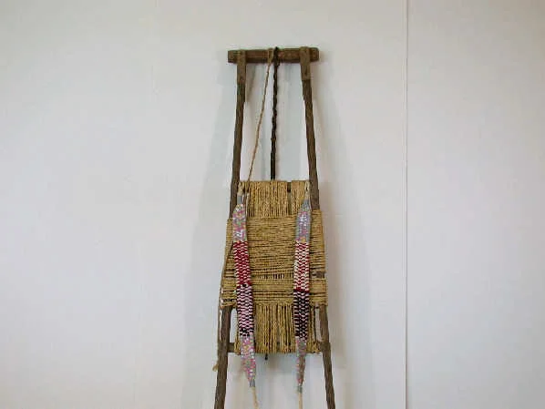

Bokka (歩荷) | Death Stranding irl
2025-06-19
Being a longtime Death Stranding aesthetics enjoyer, I always thought that the closest you can get to experiencing it in real life would be working for Uber Eats or hauling a rich man's junk on Mt. Everest as a sherpa. It was a delightful discovery to find that Death Stranding was inspired by a slightly different and very real Japanese trade called Bokka (歩荷 or literally “step cargo”). I want to share my small discovery and knowledge of these folks.
In simple terms, Bokka are porters who transport supplies to remote places that are inaccessible by vehicle. They balance heavy loads of boxes filled with food, medicine, emergency supplies, and other accommodations on rigs strapped to their backs.
The destinations are typically national park lodges and villages, surrounded by mountain peaks and stunning scenery of preserved wilderness.
Occupation of a bokka is typically a part-time or seasonal job that unfortunately doesn't pay all that well. A bokka’s daily wage ranges from 10,000 yen ($74) to 15,000 yen. I can imagine that people aren't really in it for the money.
Load weight is varied to be 70-80 kg on average. The highest load can weigh around 140 kg. That's a typical weight of a panda or a baby African male elephant. Imagine that. One season can total up to 17 tons of goods carried by one person on average.
One thing I've noticed is how the rigs used for the load distribute the weight up and forward, allowing the center of mass to shift from the back to the shoulders. One porter named Norihito Ishitaka said that he tries to adjust the center of gravity to be at a point slightly above the back of his head.
 Instead of a typical backpack, bokka uses a ladder-like “shoiko” wooden frame fitted with shoulder straps.
